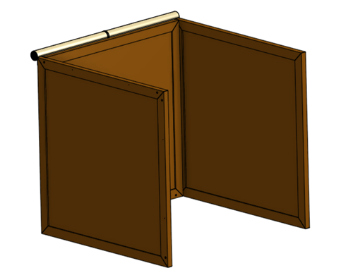

Mechanical
Frame Design
In the game cube-runner, the player has the option of moving left or right to dodge upcoming obstacles as they accelerate through space. Taking this notion for inspiration, we have developed a game in which the player must move left or right in space to navigate into a gap in an upcoming wall as they accelerate through space. The player interacts with two main forms of hardware, the tippy chair they are seated on and the paneled walls surrounding them.
In order to create an immersive game experience, we decided to fully enclose the player. To accomplish this, we developed a four by four by four foot cubic box for the user to sit in, which allows plenty of room inside to lean back and forth for gameplay, and avoids feelings of claustrophobia.
Given that the player is focused almost entirely in front of them and cannot turn, our team elected to focus materials and interaction into the walls to the front, left, and right of the user. These are constructed using a frame and panel design, with each wall comprised of four 2-by-3 beams affixed into the outline of the wall (a square) with screwed miter joints, and two eighth-inch thick hardwood veneer sheets serving as the wall surfaces.
Each beam also has two narrow slots routed along its length, which hold the panels. This construction scheme is advantageous for three main reasons. First, using solid wood for only the external frame helped us limit overall material usage, which keeps cost and weight down. Second, the hollow space between panels gives us adequate room to attach and route electrical circuit components while allowing us to keep them hidden. Finally, this design is quite modular. Should we want to replace any of the panels we only have to unscrew one of the wooden beams, slide the panel out, slide a new one in, and reattach the screws.
Similarly, the three walls are attached to each other with removable dowels and the electrical connections between walls are made with Molex connectors. This means that we can easily disassemble the entire frame for transportation or storage and reassemble it later with no degradation of structural integrity.

The top and back portions of the cube are covered convertible-style by a length of blackout fabric. One edge of this fabric is attached permanently to the top of the center wall, and the entire piece can be rolled up for entry and exit of the box, or for storage. Once the player is seated inside the box, the fabric can be unrolled along the top edges and back edges of the side walls. Magnets embedded in the fabric sides of the side walls pull the edges of the fabric to the outsides of the side walls, ensuring that there are no cracks for light to get through.

The CAD for our complete mechanical system can be found in Onshape here.Frame Fabrication
Due to a combination of high standards, low budget, and limited tool availability, the process of fabricating our full frame turned out to be a lengthy and painstaking one. The manufacturing is still underway, but what follows is a quick summary of what was done and what is left to do:
1. First we gathered raw materials, which meant a Home Depot trip for the wood and screws. If our budget had allowed we would have opted for pressure treated hardwood for the 2-by-3 beams, but because we needed to cut costs we went with 8 foot pine studs. We laid each beam flat on the ground in order to select the least warped specimens, and the good people at Home Depot sawed them in half for us. We were fortunate enough to find some 4’x8’ sheets of hardwood veneer that were in a scrap pile at our school, so we didn’t need to buy any at Home Depot.
2. Next, we needed to cut the miters in the ends of each beam. Unfortunately, our school’s woodshop does not have a chop saw or miter saw, so we had to rent one from Home Depot. At this point, we owe a huge thanks specifically to Mike at the tool rental desk and Mike the manager, who were kind enough to let us rent a huge saw and set it up in the parking lot to make our cuts, as the tool was far too large for us to take it home.
3. With the wood cut, the next step was to put the panel slots in each beam. Unfortunately, the best tool we had to accomplish this was a hand router. We clamped each beam securely to a table, then set a right-angle cutting jig to the dimensions we wanted. Using an eighth-inch bit we routed each slot, going over each cut multiple times to clear sawdust that had compacted during cutting.
4. Once the slots were cut, we decided to stain the wood for a more polished appearance. This turned out to be a very messy process, involving first sanding down each beam, and then applying stain to the wood. After letting the stain sit for a while we wiped it off, and left the wood to dry.


5. Next, we laid our 12 boards out into three squares, trying different combinations and orientations to account for variations in miter cuts and board warp, to get the three best squares we could. When we had them ready, we marked each joint so we could reassemble them in the same way later.
6. After that, we measured out the panels. For each wall, we took an “L” shape made of two adjacent beams. We slid a large sheet of panel into the slots in the pieces of the L, then added the other two beams to complete the square, but placed them on top of the sheet. We then drew a line along the inner edges of the two beams on top of the sheet to mark our cutlines. This made the panels a little shorter than the full distance between slots, which helped reduce friction during assembly and make sure everything fit together.
7.  We then cut all six panels with a panel saw, and put everything back together to check the fit.
We then cut all six panels with a panel saw, and put everything back together to check the fit.
8. Next, we painted the inside face of each panel white, to help the light from the LEDs reflect around inside.
9. Finally, we drilled holes in the inside panels to let the light from the LEDs shine through into the box.
This is as far as we have currently come, and we will proceed with full assembly once our electrical components are finalized. In order to finish the frame, we need to complete the following steps:
10. Drill large holes through some of the beams, between the panel slots, to allow wires to pass between and through frames without exposing them.
11. Drill dowel holes in the sides of beams that will be connected to each other, and cut dowels to fit.
12. Drill holes to mount magnets in the boards where appropriate.
13. Screw each frame together.
14. Attach magnets to the correct boards, and attach the fabric to the center frame.
Overall, we anticipate that this will take us around another 12 hours total.
Chair Design & Fabrication
 Another key element for the player’s input into the game is the chair. We wanted a full body interaction to completely involve the player in the game and thus settled on the idea of a low profile tilting chair. The player would be seated in the chair and use their entire body to input the left or right commands to the game. With these goals in mind, we developed a few constraints for the mechanical design of the chair. First, the chair must be able to safely support the average male at 171 lbs; second, the chair must be able to provide a controllable tilt left and right without injuring the player; and third, the chair must be able to be equipped with a tilt sensor.
Another key element for the player’s input into the game is the chair. We wanted a full body interaction to completely involve the player in the game and thus settled on the idea of a low profile tilting chair. The player would be seated in the chair and use their entire body to input the left or right commands to the game. With these goals in mind, we developed a few constraints for the mechanical design of the chair. First, the chair must be able to safely support the average male at 171 lbs; second, the chair must be able to provide a controllable tilt left and right without injuring the player; and third, the chair must be able to be equipped with a tilt sensor.
The chair was built using a computer numerically controlled (CNC) wood router, drills, belt sanders, and a hand saw. The three arches are made from ¾ inch thick plywood designed in SolidWorks and cut on the CNC wood router. The arches are not perfectly round as there exists a flattened middle section, which serves to reduce the amount of tension on the chair when the player is seated and provide a stable middle ground when the player does not wish to tilt. Pilot holes were drilled using the CNC machine onto the two outer arches to align the dowels. Wood screws and a hand drill were used to fasten the dowels to the outer arches.
Wooden slats a quarter inch thick were hand sawed and added on top of the arches for more comfortable seating and to reduce the stress concentrations on the chair. These were fastened as well to the arches using wood screws. 
Finite element analysis was conducted in SolidWorks to test if the chair would be able to support 180 pounds of force pushing downwards on the outermost dowels. The chair proved sturdy both in the FEA and when tested by members of our team.
In order to act as an input into our game software, the chair must also be compatible with a tilt sensor. Our team mounted a gyroscope to the underside of the center slat on the chair using small wood screws. A hole was drilled through the front arch for wiring to the Arduino.